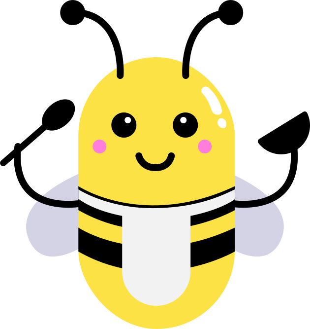

Cette première fleur est délicieuse. J'ai du pollen plein les pattes. Je peux maintenant aller de fleur en fleur afin de finir mon repas.
En faisant ça, le pollen de toutes les fleurs vont se mélanger et c'est comme ça que des bébés fleurs vont apparaîtrent.
Regardons la vidéo juste en-dessous !